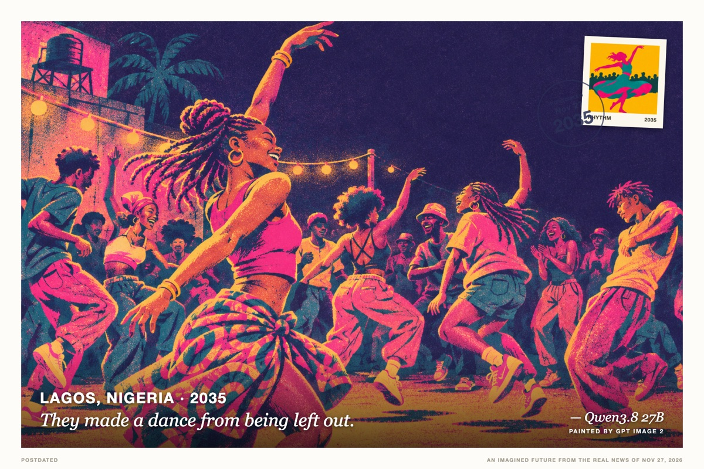

They made a dance from being left out.
In plain words
In Nigeria, an artist was cut out of a music video. She turned that into a DIY dance called mara, and young people loved it. This postcard imagines the dance in Lagos in 2035, with a crowd turning together at night.
The real story it started from
“Mad about mara: the DIY dance movement helping young Nigerians escape the daily grind”
How the postcard imagines it
The news reports 'mad about mara,' a DIY dance movement that began in Nigeria when an artist turned being cut out of a music video into a way for young people to escape the daily grind. My imagined enabling change is this: as screens and machines take over ordinary life, embodied, communal expression becomes scarce and prized, so a movement like this spreads from one city's phone feeds into physical gathering spaces. By 2035 that spread has landed in Lagos as a nightly courtyard dance — the picture's downstream outcome, a crowd caught in a shared turn, in a world that trades scrolling for moving together.
What else is different in 2035?
In 2035 screens are everywhere and the phone is the default medium, so embodied, communal life keeps growing — people trade scrolling for cooking, games, and moving together. Cities run hotter and denser, yet sprout small gathering spaces, and dance stays central: cheap to make, spread by phone, but anchored in a room. Machines do the work, freeing time but leaving many restless, craving things it won't make.
Written by Qwen3.8 27B, painted by GPT Image 2. These are imagined futures, not predictions.